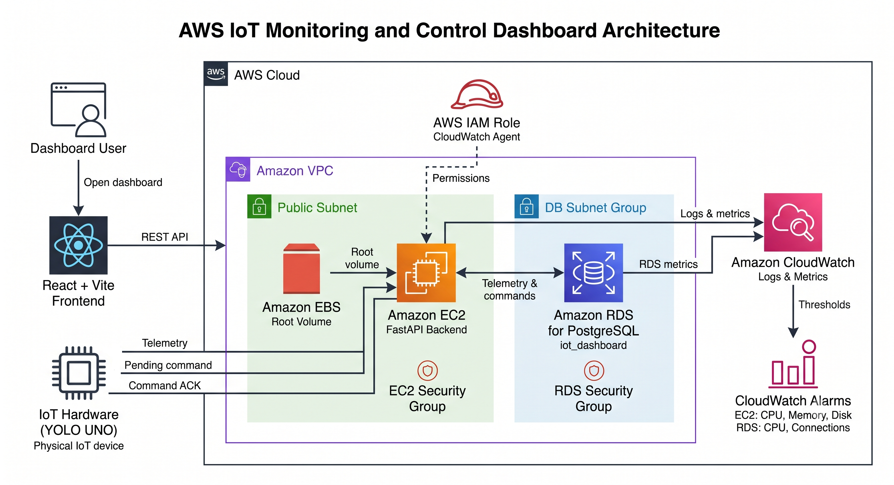

Cần cập nhật lại file PDF để nội dung khớp với trang này trước khi nộp báo cáo cuối cùng.
AWS IoT Monitoring and Control Dashboard là một nền tảng IoT kết nối với cloud, được xây dựng để giám sát dữ liệu môi trường và điều khiển thiết bị từ xa trong một phòng.
Hệ thống sử dụng thiết bị YOLO UNO ESP32-S3 để thu thập nhiệt độ, độ ẩm và cường độ ánh sáng. Phần cứng gửi telemetry thông qua HTTP REST API đến FastAPI backend chạy trên Amazon EC2. Backend lưu telemetry và command điều khiển vào Amazon RDS for PostgreSQL.
Dashboard được xây dựng bằng React + Vite, có chức năng hiển thị dữ liệu mới nhất, lịch sử cảm biến, trạng thái thiết bị và kết quả command. Người dùng có thể điều khiển quạt, đèn và rèm trên dashboard. Thiết bị định kỳ lấy command đang chờ từ backend, thực thi và gửi ACK để trạng thái command chuyển từ Pending sang Executed.
Amazon CloudWatch được sử dụng để thu thập log backend và metric hạ tầng. CloudWatch Alarms được cấu hình để theo dõi trạng thái vận hành của EC2 và RDS.
Trong các phòng nhỏ, phòng thí nghiệm hoặc môi trường học tập, cảm biến và thiết bị điện thường hoạt động riêng lẻ. Điều này tạo ra một số hạn chế:
Project xây dựng một nền tảng giám sát và điều khiển trên cloud với luồng dữ liệu hai chiều hoàn chỉnh:
Hệ thống hỗ trợ:
Pending và Executed.Dự án hướng đến các mục tiêu sau:
Pending → Executed.Phiên bản hiện tại tập trung vào một thiết bị mẫu:
DEVICE_ID = room_01
Thiết bị gồm:
Các command được hỗ trợ:
FAN_ON
FAN_OFF
LIGHT_ON
LIGHT_OFF
CURTAIN_OPEN
CURTAIN_CLOSE
Phiên bản hiện tại không sử dụng:
Các dịch vụ này có thể được cân nhắc trong tương lai nếu project thay đổi mô hình triển khai.

| Thành phần | Công nghệ | Mục đích |
|---|---|---|
| Frontend | React, Vite, TypeScript, Tailwind CSS | Hiển thị telemetry, lịch sử, phân tích và các nút điều khiển |
| Backend | Python, FastAPI, Uvicorn, SQLAlchemy, Pydantic | Cung cấp REST API và xử lý telemetry, command và ACK |
| Database | Amazon RDS for PostgreSQL | Lưu telemetry và trạng thái command |
| Compute | Amazon EC2 với Amazon EBS | Chạy FastAPI backend bằng systemd |
| IoT Hardware | YOLO UNO ESP32-S3, PlatformIO, Arduino | Đọc cảm biến, điều khiển actuator, lấy command và gửi ACK |
| Networking | Amazon VPC, subnet, Security Groups | Kiểm soát kết nối giữa người dùng, EC2 và RDS |
| Identity | AWS IAM Role | Cấp quyền để EC2 gửi dữ liệu lên CloudWatch |
| Monitoring | Amazon CloudWatch và CloudWatch Alarms | Thu thập log, metric và đánh giá các ngưỡng cảnh báo |
POST /api/telemetry
POST /api/devices/{device_id}/commands
Pending.GET /api/devices/{device_id}/commands/latest
POST /api/devices/{device_id}/commands/{command_id}/ack
Executed.| Dịch vụ AWS | Lý do lựa chọn |
|---|---|
| Amazon EC2 | Cho phép chủ động cấu hình FastAPI, Python environment, systemd và log file |
| Amazon EBS | Cung cấp root volume bền vững cho EC2 |
| Amazon RDS for PostgreSQL | Database quan hệ được quản lý, phù hợp với telemetry và command |
| Amazon VPC | Cung cấp khả năng cô lập mạng và kiểm soát bằng Security Group |
| AWS IAM Role | Tránh hard-code AWS access key trên EC2 |
| Amazon CloudWatch | Tập trung log, metric và alarm phục vụ vận hành và debug |
.env, .pem, private key và hardware/include/secrets.h được loại khỏi Git.aws-iot-backend systemd service.Dự án được thực hiện trong 10 tuần.
| Tuần | Mốc triển khai | Kết quả mong đợi |
|---|---|---|
| Tuần 1 | Phân tích yêu cầu và lập kế hoạch | Bài toán, phạm vi, phân công và kiến trúc ban đầu |
| Tuần 2 | Thiết kế kiến trúc AWS và nền tảng mạng | VPC, subnet, Security Groups và kế hoạch IAM |
| Tuần 3 | Triển khai EC2 và RDS | EC2 hoạt động và PostgreSQL database sẵn sàng |
| Tuần 4 | Xây dựng nền tảng backend và database | Cấu trúc FastAPI, schema và kết nối database |
| Tuần 5 | Xây dựng API telemetry và command | Telemetry, latest, history, command và ACK endpoint |
| Tuần 6 | Tích hợp phần cứng YOLO UNO | Đọc cảm biến, điều khiển actuator, Wi-Fi và REST API |
| Tuần 7 | Phát triển frontend dashboard | Telemetry card, biểu đồ, bảng điều khiển và phân tích |
| Tuần 8 | Tích hợp end-to-end và debug | Hoàn thiện luồng telemetry và command với phần cứng thật |
| Tuần 9 | CloudWatch và kiểm thử hệ thống | Logs, metrics, alarms, failure test và security review |
| Tuần 10 | Hoàn thiện tài liệu, demo và bàn giao | Báo cáo song ngữ, Workshop, video demo và repository cuối |
Project sử dụng các tài nguyên AWS nhỏ, phù hợp với mục đích học tập và demo.
| Tài nguyên | Yếu tố tính phí | Cách tối ưu |
|---|---|---|
| Amazon EC2 | Thời gian instance hoạt động | Dùng instance nhỏ và dừng khi không cần thiết |
| Amazon EBS | Dung lượng được cấp phát | Chỉ cấp root volume đủ dùng |
| Amazon RDS for PostgreSQL | Instance class, storage và thời gian chạy | Dùng database instance nhỏ cho môi trường Workshop |
| Amazon CloudWatch | Log ingestion, retention và custom metrics | Giới hạn thời gian lưu log và tránh metric không cần thiết |
| Data Transfer | Request giữa người dùng, hardware và EC2 | Sử dụng chu kỳ telemetry và polling hợp lý |
Chi phí thực tế phụ thuộc vào region, kích thước tài nguyên và thời gian sử dụng. Nhóm cần kiểm tra và clean-up tài nguyên sau Workshop để tránh phát sinh chi phí ngoài dự kiến.
| Rủi ro | Ảnh hưởng | Phương án xử lý |
|---|---|---|
| YOLO UNO mất Wi-Fi | Telemetry và command tạm thời ngừng hoạt động | Tự kết nối lại Wi-Fi và retry HTTP request |
| Public IP của EC2 thay đổi | Frontend và hardware không gọi được backend | Cập nhật cấu hình hoặc dùng Elastic IP trong phiên bản tương lai |
| Backend bị dừng | API không hoạt động | Chạy Uvicorn bằng systemd và tự động restart |
| Không kết nối được RDS | Không lưu được telemetry và command | Kiểm tra endpoint, credential, Security Groups và DATABASE_URL |
| Command bị thực thi lặp | Actuator thực hiện lại hành động | Lưu command ID mới nhất và chỉ thực thi mỗi command một lần |
| Gửi ACK thất bại | Command vẫn ở trạng thái Pending |
Retry ACK nhưng không thực thi lại actuator |
| Lộ credential | Rủi ro bảo mật | Ignore .env, .pem, private key và secrets.h |
| Phát sinh chi phí AWS | Chi phí project tăng | Dừng hoặc xóa tài nguyên sau khi kiểm thử và kiểm tra CloudWatch |
| Giá trị cảm biến không chính xác | Đề xuất điều khiển không phù hợp | Kiểm tra dữ liệu và hiệu chỉnh threshold |
| Không đồng nhất khi tích hợp | Frontend, backend và hardware dùng payload hoặc endpoint khác nhau | Duy trì một API contract chung và kiểm thử end-to-end |
Project dự kiến tạo ra:
Pending sang Executed.Project được xem là hoàn thành khi:
room_01.Executed.| Thành viên | Vai trò | Trách nhiệm chính |
|---|---|---|
| Phạm Lê Minh Khôi | AWS và Hardware Lead | Kiến trúc AWS, VPC, Security Groups, IAM Role, EC2, RDS, CloudWatch, DevOps, firmware YOLO UNO, cảm biến, actuator, telemetry, polling command và ACK |
| Ngô Minh Thuận | Backend Developer | FastAPI backend, API endpoint, Pydantic schema, SQLAlchemy model, tích hợp PostgreSQL, xử lý telemetry, vòng đời command và ACK |
| Thượng Đình Hưng | Frontend và Integration Developer | React + Vite dashboard, giao diện, trực quan hóa telemetry, điều khiển thiết bị, tích hợp tổng thể, debug và quay video demo |
| Lê Bảo Khánh | Documentation và QA | Proposal, blog, worklog theo tuần, báo cáo event, tài liệu Workshop, kiểm tra song ngữ, navigation, screenshot và đảm bảo chất lượng |
Các sản phẩm cuối cùng gồm: